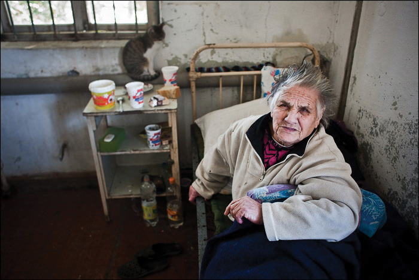
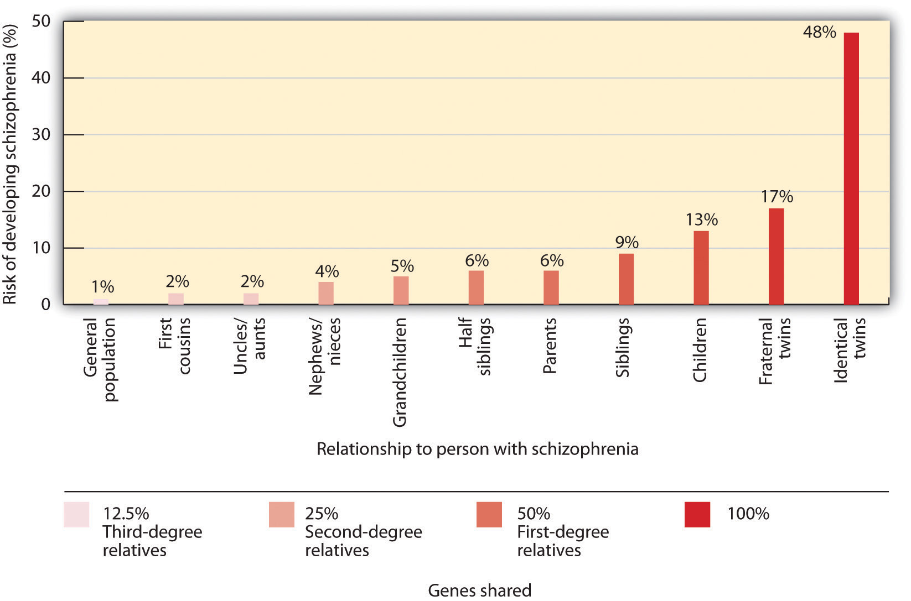

The term schizophrenia, which in Greek means “split mind,” was first used to describe a psychological disorder by Eugen Bleuler (1857–1939), a Swiss psychiatrist who was studying patients who had very severe thought disorders. SchizophreniaA serious psychological disorder marked by delusions, hallucinations, loss of contact with reality, inappropriate affect, disorganized speech, social withdrawal, and deterioration of adaptive behavior. is a serious psychological disorder marked by delusions, hallucinations, loss of contact with reality, inappropriate affect, disorganized speech, social withdrawal, and deterioration of adaptive behavior.
Figure 12.14
People with schizophrenia may exhibit disorganized behavior, as this person does.
Source: Photo courtesy of Max Avdeev, http://www.flickr.com/photos/avdeev/4203380988.
Schizophrenia is the most chronic and debilitating of all psychological disorders. It affects men and women equally, occurs in similar rates across ethnicities and across cultures, and affects at any one time approximately 3 million people in the United States (National Institute of Mental Health, 2010).National Institute of Mental Health. (2010, April 26). What is schizophrenia? Retrieved from http://www.nimh.nih.gov/health/topics/schizophrenia/index.shtml Onset of schizophrenia is usually between the ages of 16 and 30 and rarely after the age of 45 or in children (Mueser & McGurk, 2004; Nicholson, Lenane, Hamburger, Fernandez, Bedwell, & Rapoport, 2000).Mueser, K. T., & McGurk, S. R. (2004). Schizophrenia. Lancet, 363(9426), 2063–2072; Nicolson, R., Lenane, M., Hamburger, S. D., Fernandez, T., Bedwell, J., & Rapoport, J. L. (2000). Lessons from childhood-onset schizophrenia. Brain Research Review, 31(2–3), 147–156.
Schizophrenia is accompanied by a variety of symptoms, but not all patients have all of them (Lindenmayer & Khan, 2006).Lindenmayer, J. P., & Khan, A. (2006). Psychological disorder. In J. A. Lieberman, T. S. Stroup, & D. O. Perkins (Eds.), Textbook of schizophrenia (pp. 187–222). Washington, DC: American Psychiatric Publishing. As you can see in Table 12.5 "Positive, Negative, and Cognitive Symptoms of Schizophrenia", the symptoms are divided into positive symptoms, negative symptoms, and cognitive symptoms (American Psychiatric Association, 2008; National Institute of Mental Health, 2010).American Psychiatric Association. (2000). Diagnostic and statistical manual of mental disorders (4th ed., text rev.). Washington, DC: Author; National Institute of Mental Health. (2010, April 26). What is schizophrenia? Retrieved from http://www.nimh.nih.gov/health/topics/schizophrenia/index.shtml Positive symptoms refer to the presence of abnormal behaviors or experiences (such as hallucinations) that are not observed in normal people, whereas negative symptoms (such as lack of affect and an inability to socialize with others) refer to the loss or deterioration of thoughts and behaviors that are typical of normal functioning. Finally, cognitive symptoms are the changes in cognitive processes that accompany schizophrenia (Skrabalo, 2000).Skrabalo, A. (2000). Negative symptoms in schizophrenia(s): The conceptual basis. Harvard Brain, 7, 7–10. Because the patient has lost contact with reality, we say that he or she is experiencing psychosisA psychological condition characterized by a loss of contact with reality., which is a psychological condition characterized by a loss of contact with reality.
Table 12.5 Positive, Negative, and Cognitive Symptoms of Schizophrenia
| Positive symptoms | Negative symptoms | Cognitive symptoms |
|---|---|---|
| Hallucinations | Social withdrawal | Poor executive control |
| Delusions (of grandeur or persecution) | Flat affect and lack of pleasure in everyday life | Trouble focusing |
| Derailment | Apathy and loss of motivation | Working memory problems |
| Grossly disorganized behavior | Distorted sense of time | Poor problem-solving abilities |
| Inappropriate affect | Lack of goal-oriented activity | |
| Movement disorders | Limited speech | |
| Poor hygiene and grooming |
People with schizophrenia almost always suffer from hallucinationsAn imaginary sensation that occurs in the absence of a real stimulus or that is a gross distortion of a real stimulus.—imaginary sensations that occur in the absence of a real stimulus or which are gross distortions of a real stimulus. Auditory hallucinations are the most common and are reported by approximately three quarters of patients (Nicolson, Mayberg, Pennell, & Nemeroff, 2006).Nicolson, S. E., Mayberg, H. S., Pennell, P. B., & Nemeroff, C. B. (2006). Persistent auditory hallucinations that are unresponsive to antipsychotic drugs. The American Journal of Psychiatry, 163, 1153–1159. doi:10.1176/appi.ajp.163.7.1153 Schizophrenic patients frequently report hearing imaginary voices that curse them, comment on their behavior, order them to do things, or warn them of danger (National Institute of Mental Health, 2009).National Institute of Mental Health. (2009, September 8). What are the symptoms of schizophrenia? Retrieved from http://www.nimh.nih.gov/health/publications/schizophrenia/what-are-the-symptoms-of-schizophrenia.shtml Visual hallucinations are less common and frequently involve seeing God or the devil (De Sousa, 2007).De Sousa, A. (2007). Types and contents of hallucinations in schizophrenia. Journal of Pakistan Psychiatric Society, 4(1), 29.
Schizophrenic people also commonly experience delusionsA false belief not commonly shared by others within one’s culture, and maintained even though it is obviously out of touch with reality., which are false beliefs not commonly shared by others within one’s culture, and maintained even though they are obviously out of touch with reality. People with delusions of grandeur believe that they are important, famous, or powerful. They often become convinced that they are someone else, such as the president or God, or that they have some special talent or ability. Some claim to have been assigned to a special covert mission (Buchanan & Carpenter, 2005).Buchanan, R. W., & Carpenter, W. T. (2005). Concept of schizophrenia. In B. J. Sadock & V. A. Sadock (Eds.), Kaplan & Sadock’s comprehensive textbook of psychiatry. Philadelphia, PA: Lippincott Williams & Wilkins. People with delusions of persecution believe that a person or group seeks to harm them. They may think that people are able to read their minds and control their thoughts (Maher, 2001).Maher, B. A. (2001). Delusions. In P. B. Sutker & H. E. Adams (Eds.), Comprehensive handbook of psychological disorder (3rd ed., pp. 309–370). New York, NY: Kluwer Academic/Plenum. If a person suffers from delusions of persecution, there is a good chance that he or she will become violent, and this violence is typically directed at family members (Buchanan & Carpenter, 2005).Buchanan, R. W., & Carpenter, W. T. (2005). Concept of schizophrenia. In B. J. Sadock & V. A. Sadock (Eds.), Kaplan & Sadock’s comprehensive textbook of psychiatry. Philadelphia, PA: Lippincott Williams & Wilkins.
People suffering from schizophrenia also often suffer from the positive symptom of derailment—the shifting from one subject to another, without following any one line of thought to conclusion—and may exhibit grossly disorganized behavior including inappropriate sexual behavior, peculiar appearance and dress, unusual agitation (e.g., shouting and swearing), strange body movements, and awkward facial expressions. It is also common for schizophrenia sufferers to experience inappropriate affect. For example, a patient may laugh uncontrollably when hearing sad news. Movement disorders typically appear as agitated movements, such as repeating a certain motion again and again, but can in some cases include catatonia, a state in which a person does not move and is unresponsive to others (Janno, Holi, Tuisku, & Wahlbeck, 2004; Rosebush & Mazurek, 2010).Janno, S., Holi, M., Tuisku, K., & Wahlbeck, K. (2004). Prevalence of neuroleptic-induced movement disorders in chronic schizophrenia patients. American Journal of Psychiatry, 161, 160–163; Rosebush, P. I., & Mazurek, M. F. (2010). Catatonia and its treatment. Schizophrenia Bulleting, 36(2), 239–242. doi:10.1093/schbul/sbp141
Negative symptoms of schizophrenia include social withdrawal, poor hygiene and grooming, poor problem-solving abilities, and a distorted sense of time (Skrabalo, 2000).Skrabalo, A. (2000). Negative symptoms in schizophrenia(s): The conceptual basis. Harvard Brain, 7, 7–10. Patients often suffer from flat affect, which means that they express almost no emotional response (e.g., they speak in a monotone and have a blank facial expression) even though they may report feeling emotions (Kring, 1999).Kring, A. M. (1999). Emotion in schizophrenia: Old mystery, new understanding. Current Directions in Psychological Science, 8, 160–163. Another negative symptom is the tendency toward incoherent language, for instance, to repeat the speech of others (“echo speech”). Some schizophrenics experience motor disturbances, ranging from complete catatonia and apparent obliviousness to their environment to random and frenzied motor activity during which they become hyperactive and incoherent (Kirkpatrick & Tek, 2005).Kirkpatrick, B., & Tek, C. (2005). Schizophrenia: Clinical features and psychological disorder concepts. In B. J. Sadock & S. V. Sadock (Eds.), Kaplan & Sadock’s comprehensive textbook of psychiatry (pp. 1416–1435). Philadelphia, PA: Lippincott Williams & Wilkins.
Not all schizophrenic patients exhibit negative symptoms, but those who do also tend to have the poorest outcomes (Fenton & McGlashan, 1994).Fenton, W. S., & McGlashan, T. H. (1994). Antecedents, symptom progression, and long-term outcome of the deficit syndrome in schizophrenia. American Journal of Psychiatry, 151, 351–356. Negative symptoms are predictors of deteriorated functioning in everyday life and often make it impossible for sufferers to work or to care for themselves.
Cognitive symptoms of schizophrenia are typically difficult for outsiders to recognize but make it extremely difficult for the sufferer to lead a normal life. These symptoms include difficulty comprehending information and using it to make decisions (the lack of executive control), difficulty maintaining focus and attention, and problems with working memory (the ability to use information immediately after it is learned).
There is no single cause of schizophrenia. Rather, a variety of biological and environmental risk factors interact in a complex way to increase the likelihood that someone might develop schizophrenia (Walker, Kestler, Bollini, & Hochman, 2004).Walker, E., Kesler, L., Bollini, A., & Hochman, K. (2004). Schizophrenia: Etiology and course. Annual Review of Psychology, 55, 401–430.
Studies in molecular genetics have not yet identified the particular genes responsible for schizophrenia, but it is evident from research using family, twin, and adoption studies that genetics are important (Walker & Tessner, 2008).Walker, E., & Tessner, K. (2008). Schizophrenia. Perspectives on Psychological Science, 3(1), 30–37. As you can see in Figure 12.15 "Genetic Disposition to Develop Schizophrenia", the likelihood of developing schizophrenia increases dramatically if a close relative also has the disease.
Figure 12.15 Genetic Disposition to Develop Schizophrenia
The risk of developing schizophrenia increases substantially if a person has a relative with the disease.
Source: Adapted from Gottesman, I. I. (1991). Schizophrenia genesis: The origins of madness. New York, NY: W. H. Freeman.
Neuroimaging studies have found some differences in brain structure between schizophrenic and normal patients. In some people with schizophrenia, the cerebral ventricles (fluid-filled spaces in the brain) are enlarged (Suddath, Christison, Torrey, Casanova, & Weinberger, 1990).Suddath, R. L., Christison, G. W., Torrey, E. F., Casanova, M. F., & Weinberger, D. R. (1990). Anatomical abnormalities in the brains of monozygotic twins discordant for schizophrenia. New England Journal of Medicine, 322(12), 789–794. People with schizophrenia also frequently show an overall loss of neurons in the cerebral cortex, and some show less activity in the frontal and temporal lobes, which are the areas of the brain involved in language, attention, and memory. This would explain the deterioration of functioning in language and thought processing that is commonly experienced by schizophrenic patients (Galderisi et al., 2008).Galderisi, S., Quarantelli, M., Volper, U., Mucci, A., Cassano, G. B., Invernizzi, G.,…Maj, M. (2008). Patterns of structural MRI abnormalities in deficit and nondeficit schizophrenia. Schizophrenia Bulletin, 34, 393–401.
Many researchers believe that schizophrenia is caused in part by excess dopamine, and this theory is supported by the fact that most of the drugs useful in treating schizophrenia inhibit dopamine activity in the brain (Javitt & Laruelle, 2006).Javitt, D. C., & Laruelle, M. (2006). Neurochemical theories. In J. A. Lieberman, T. S. Stroup, & D. O. Perkins (Eds.), Textbook of schizophrenia (pp. 85–116). Washington, DC: American Psychiatric Publishing. Levels of serotonin may also play a part (Inayama et al., 1996).Inayama, Y., Yoneda, H., Sakai, T., Ishida, T., Nonomura, Y., Kono, Y.,…Asaba, H. (1996). Positive association between a DNA sequence variant in the serotonin 2A receptor gene and schizophrenia. American Journal of Medical Genetics, 67(1), 103–105. But recent evidence suggests that the role of neurotransmitters in schizophrenia is more complicated than was once believed. It also remains unclear whether observed differences in the neurotransmitter systems of people with schizophrenia cause the disease, or if they are the result of the disease itself or its treatment (Csernansky & Grace, 1998).Csernansky, J. G., & Grace, A. A. (1998). New models of the pathophysiology of schizophrenia: Editors’ introduction. Schizophrenia Bulletin, 24(2), 185–187.
A genetic predisposition to developing schizophrenia does not always develop into the actual disorder. Even if a person has an identical twin with schizophrenia, he still has less than a 50% chance of getting it himself, and over 60% of all schizophrenic people have no first- or second-degree relatives with schizophrenia (Gottesman & Erlenmeyer-Kimling, 2001; Riley & Kendler, 2005).Gottesman, I. I., & Erlenmeyer-Kimling, L. (2001). Family and twin studies as a head start in defining prodomes and endophenotypes for hypothetical early interventions in schizophrenia. Schizophrenia Research, 5(1), 93–102; Riley, B. P., & Kendler, K. S. (2005). Schizophrenia: Genetics. In B. J. Sadock & V. A. Sadock (Eds.), Kaplan & Sadock’s comprehensive textbook of psychiatry (pp.1354–1370). Philadelphia, PA: Lippincott Williams & Wilkins. This suggests that there are important environmental causes as well.
One hypothesis is that schizophrenia is caused in part by disruptions to normal brain development in infancy that may be caused by poverty, malnutrition, and disease (Brown et al., 2004; Murray & Bramon, 2005; Susser et al., 1996; Waddington, Lane, Larkin, O’Callaghan, 1999).Brown, A. S., Begg, M. D., Gravenstein, S., Schaefer, C. S., Wyatt, R. J., Bresnahan, M.,…Susser, E. S. (2004). Serologic evidence of prenatal influenza in the etiology of schizophrenia. Archives of General Psychiatry, 61, 774–780; Murray, R. M., & Bramon, E. (2005). Developmental model of schizophrenia. In B. J. Sadock & V. A. Sadock (Eds.), Kaplan & Sadock’s comprehensive textbook of psychiatry (pp. 1381–1395). Philadelphia, PA: Lippincott Williams & Wilkins; Susser, E. B., Neugebauer, R., Hock, H.W., Brown, A. S., Lin, S., Labowitz, D., & Gorman, J. M. (1996). Schizophrenia after prenatal famine: Further evidence. Archives of general psychiatry, 53, 25–31; Waddington J. L., Lane, A., Larkin, C., & O’Callaghan, E. (1999). The neurodevelopmental basis of schizophrenia: Clinical clues from cerebro-craniofacial dysmorphogenesis, and the roots of a lifetime trajectory of disease. Biological Psychiatry, 46(1), 31–9. Stress also increases the likelihood that a person will develop schizophrenic symptoms; onset and relapse of schizophrenia typically occur during periods of increased stress (Walker, Mittal, & Tessner, 2008).Walker, E., Mittal, V., & Tessner, K. (2008). Stress and the hypothalamic pituitary adrenal axis in the developmental course of schizophrenia. Annual Review of Clinical Psychology, 4, 189–216. However, it may be that people who develop schizophrenia are more vulnerable to stress than others and not necessarily that they experience more stress than others (Walker, Mittal, & Tessner, 2008).Walker, E., Mittal, V., & Tessner, K. (2008). Stress and the hypothalamic pituitary adrenal axis in the developmental course of schizophrenia. Annual Review of Clinical Psychology, 4, 189–216. Many homeless people are likely to be suffering from undiagnosed schizophrenia.
Another social factor that has been found to be important in schizophrenia is the degree to which one or more of the patient’s relatives is highly critical or highly emotional in their attitude toward the patient. Hooley and Hiller (1998)Hooley, J. M., & Hiller, J. B. (1998). Expressed emotion and the pathogenesis of relapse in schizophrenia. In M. F. Lenzenweger & R. H. Dworkin (Eds.), Origins and development of schizophrenia: Advances in experimental psychopathology (pp. 447–468). Washington, DC: American Psychological Association. found that schizophrenic patients who ended a stay in a hospital and returned to a family with high expressed emotion were three times more likely to relapse than patients who returned to a family with low expressed emotion. It may be that the families with high expressed emotion are a source of stress to the patient.